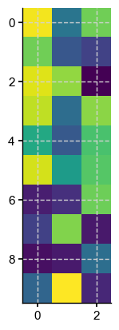
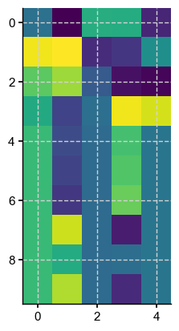

A quickstart of the GraphEM solver¶
Expected time to run through: 3 mins
This tutorial demonstrates a quickstart of the GraphEM solver.
[1]:
%load_ext autoreload
%autoreload 2
import numpy as np
import matplotlib.pyplot as plt
import GraphEM
[2]:
np.set_printoptions(precision = 4) # set print forma
[3]:
#Generate data
np.random.seed(42)
# Temperature
temp = np.random.rand(5,10).T # 10 years, 5 grid points
target = np.copy(temp)
print("Original Temp:\n",temp)
temp[4:10,:] = np.nan # Insert missing values after instrumental period
Original Temp:
[[0.3745 0.0206 0.6119 0.6075 0.122 ]
[0.9507 0.9699 0.1395 0.1705 0.4952]
[0.732 0.8324 0.2921 0.0651 0.0344]
[0.5987 0.2123 0.3664 0.9489 0.9093]
[0.156 0.1818 0.4561 0.9656 0.2588]
[0.156 0.1834 0.7852 0.8084 0.6625]
[0.0581 0.3042 0.1997 0.3046 0.3117]
[0.8662 0.5248 0.5142 0.0977 0.5201]
[0.6011 0.4319 0.5924 0.6842 0.5467]
[0.7081 0.2912 0.0465 0.4402 0.1849]]
[4]:
plt.imshow(temp)
plt.show()

[5]:
# Proxies
proxy = np.random.rand(3,10).T # 10 years, 3 proxies
# calibration period
calib = range(0,4)
print("calib\n",calib)
G = GraphEM.solver.GraphEM()
calib
range(0, 4)
[6]:
plt.imshow(proxy)
plt.show()

[7]:
#Fit test
G.fit(temp,proxy,calib,sp_TT=3,sp_TP=3,sp_PP=3,graph_method = 'glasso')
temp_r = G.temp_r
Estimating graph using greedy search
Iter TT TP PP
001 10.000 0.000 0.000
002 10.000 13.333 0.000
003 10.000 13.333 0.000
004 10.000 13.333 0.000
005 10.000 13.333 0.000
006 10.000 13.333 0.000
007 10.000 13.333 0.000
008 10.000 13.333 0.000
009 10.000 13.333 0.000
010 10.000 13.333 0.000
011 10.000 13.333 0.000
012 10.000 13.333 0.000
013 10.000 13.333 0.000
014 10.000 13.333 33.333
Running GraphEM:
Iter dXmis rdXmis
001 0.0544 0.1120
002 0.0742 0.1516
003 0.0347 0.0694
004 0.0175 0.0345
005 0.0089 0.0173
006 0.0045 0.0087
007 0.0023 0.0045
/Users/fzhu/Github/GraphEM/GraphEM/GraphEstimation.py:270: RuntimeWarning: invalid value encountered in reciprocal
dinv = np.sqrt(d)**(-1)
[8]:
print("Computing verification statistics\n")
V = GraphEM.solver.verif_stats(temp_r,target,calib)
print(V)
print("temp:\n",temp)
print("temp_r",temp_r)
print("proxy:\n",proxy)
Computing verification statistics
Mean MSE = 0.0832, Mean RE = -0.0908, Mean CE = -1.0142, Mean R2 = nan
temp:
[[0.3745 0.0206 0.6119 0.6075 0.122 ]
[0.9507 0.9699 0.1395 0.1705 0.4952]
[0.732 0.8324 0.2921 0.0651 0.0344]
[0.5987 0.2123 0.3664 0.9489 0.9093]
[ nan nan nan nan nan]
[ nan nan nan nan nan]
[ nan nan nan nan nan]
[ nan nan nan nan nan]
[ nan nan nan nan nan]
[ nan nan nan nan nan]]
temp_r [[0.3745 0.0206 0.6119 0.6075 0.122 ]
[0.9507 0.9699 0.1395 0.1705 0.4952]
[0.732 0.8324 0.2921 0.0651 0.0344]
[0.5987 0.2123 0.3664 0.9489 0.9093]
[0.6632 0.2401 0.353 0.6908 0.3905]
[0.6631 0.217 0.353 0.7117 0.3905]
[0.663 0.173 0.3531 0.7514 0.3905]
[0.6652 0.8992 0.3516 0.0956 0.3905]
[0.6643 0.603 0.3522 0.3631 0.3905]
[0.6651 0.8556 0.3517 0.1349 0.3905]]
proxy:
[[0.9696 0.3887 0.7722]
[0.7751 0.2713 0.1987]
[0.9395 0.8287 0.0055]
[0.8948 0.3568 0.8155]
[0.5979 0.2809 0.7069]
[0.9219 0.5427 0.729 ]
[0.0885 0.1409 0.7713]
[0.196 0.8022 0.074 ]
[0.0452 0.0746 0.3585]
[0.3253 0.9869 0.1159]]
/Users/fzhu/Apps/miniconda3/envs/LMRt/lib/python3.8/site-packages/numpy/lib/function_base.py:2642: RuntimeWarning: invalid value encountered in true_divide
c /= stddev[:, None]
/Users/fzhu/Apps/miniconda3/envs/LMRt/lib/python3.8/site-packages/numpy/lib/function_base.py:2643: RuntimeWarning: invalid value encountered in true_divide
c /= stddev[None, :]
[9]:
plt.imshow(temp)
plt.show()
plt.imshow(temp_r)
plt.show()

